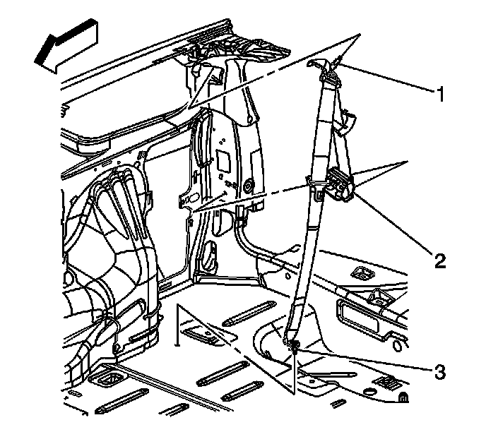

Body Side Rear Upper Garnish Molding Replacement (w/o TB5)
Body Side Rear Upper Garnish Molding Replacement (w/o TB5)
Removal Procedure
1. Remove the seat belt retractor guide bolt (1).

2. Remove the seat belt retractor anchor bolt (3).

3. Remove the garnish molding (1).
4. Slide the seat belt through the garnish molding.
Installation Procedure
1. Insert the seat belt through the garnish molding.
2. Insert the seat belt guide into the garnish molding.
3. Align the retainers on the garnish molding (1) with the holes in the body pillar.
4. Push the panel inward in order to secure the retainers.
Notice: Refer to Fastener Notice (Fastener Notice) .
5. Install the seat belt retractor anchor bolt (3). Ensure that the belt is not twisted.
Tighten the bolt to 45 N.m (33 lb ft).
6. Install the seat belt retractor guide bolt (1). Ensure that the belt is not twisted.
Tighten the bolt to 70 N.m (52 lb ft).